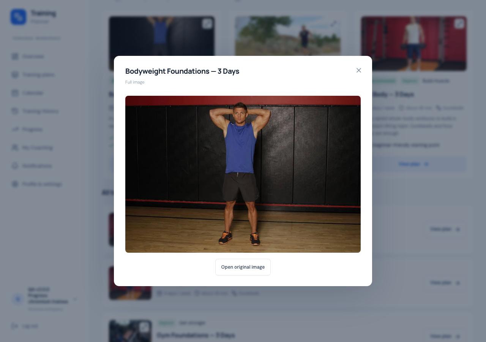
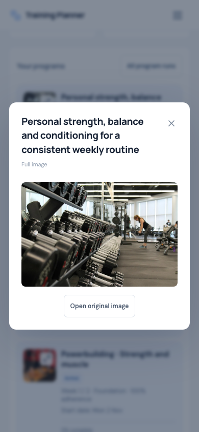

Training Planner · 2 November 2026
v2.3.7 — Full image previews
READY — DEPLOYED AND VERIFIED
Click or tap plan and program thumbnails to see the complete,
uncropped image.
Behavior
Thumbnails now show an expand icon and open the existing
accessible modal. This covers Personal Overview, Personal and
Coach Progress, personal plans, Coach templates, assigned plans,
recommendations and the full catalog.
The preview fits the full stored image within the screen. Open
original image opens that file in a separate browser tab. Close
with the X, Escape or backdrop; focus returns to the thumbnail.
Missing images use the existing fallback.
Program cards now have a separate thumbnail button and program
links, avoiding nested interactive controls and accidental
navigation. The recent responsive card layout is preserved.
Existing media files are reused without uploads or copies.
Verification
Chromium and WebKit passed 266 checks across image previews,
keyboard interaction, native modal background isolation, focus
return, original-image tabs, fallback images, card layout and
the full workout/program lifecycle. Responsive checks covered
320 × 480, 360, 375, 390, 430, 768 and 1280 widths. No physical
phone test is claimed.
614 SQLite tests (12,064 assertions), 38 JavaScript tests, the
production build, Pint, Prettier, Composer validation/audit and
diff checks passed. This update changes only frontend behavior
and browser checks; no PHP, database schema or dependency
changes. MySQL was last verified by the full v2.3.6 baseline
suite.
Local QA cleanup removed eight disposable accounts and 146
generated images; original fingerprints across 22 tables and 44
media files match.
Verification evidence
Mobile preview

Desktop preview

Release and deployment
READY — DEPLOYED AND VERIFIED. Production moved from verified
v2.3.6 to immutable v2.3.7 commit
1846a4573540722776e09e4a37795e18e7c17e14. The
source and annotated tag were pushed without changing earlier
tags. This evidence is recorded in a documentation-only
follow-up commit.
Fresh database, runtime, uploads and environment backups were
verified before replacement. The immutable tag was exported and
rebuilt in a separate release directory. 75 patch files were
deployed; all 7,592 origin file hashes verified. All 540 public
assets verified: 536 exact HTTP hashes and 4 CDN-reencoded PNGs
with identical decoded pixels.
Live Chromium and WebKit passed 251 checks across full-image
previews, original-image tabs, program navigation, responsive
layouts, failed-image fallback and PWA behavior. Twelve HTTP
checks verified Personal and assignment-scoped Coach card data.
No migration ran. Push remains disabled; cron and environment
settings are unchanged.
All 4 disposable live accounts and generated media were removed.
All 650 original rows across 22 tables and 490 original media
files match the fresh backup. Environment bytes match exactly.
Temporary deployment endpoints, archives and credential ledgers
were removed. No known BLOCKER or HIGH issue remains in the
tested scope.
Deployment evidence ·
Open live Progress
Live desktop image preview

Live mobile image preview
